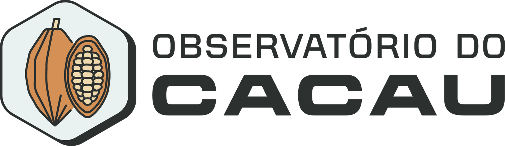

Em —, a indústria recebeu — mil toneladas de amêndoas nacionais e moeu — mil. No mercado internacional, o preço médio de — foi de US$ — por tonelada, uma variação de — em doze meses.
Produção de amêndoas, IBGE (—)
—mil t
— sobre o ano anterior
Recebimentos da indústria, AIPC (—)
—mil t
— sobre o ano anterior
Moagem no Brasil, AIPC (—)
—mil t
— sobre o ano anterior
Preço médio ICCO (—)
—US$/t
— em doze meses
Saldo comercial de cacau e derivados (—)
—US$ mi
exportações de US$ — mi e importações de US$ — mi
Boletim mensal sobre preço, oferta, demanda e clima do cacau, montado a partir de fontes públicas. Edição de —, com dados até —.
—
Preço médio ICCO (—)
—US$/t
— em doze meses
Chegadas aos portos da Costa do Marfim, 1º/out a —
—mil t
— sobre a safra passada
Moagem Europa + Ásia, —
—mil t
— sobre o mesmo trimestre de 2025
Recebimento AIPC, —
—mil t
— sobre o mesmo trimestre de 2025
Chance de El Niño forte ou muito forte, —
—%
NOAA, previsão de novembro
ICCO, por tonelada
O pico da série foi em —, a US$ —/t; o último mês está — em relação a ele. De agosto a outubro de 2026 a média vem de fontes secundárias da ICCO, sem valor em euro.
Estimativas públicas mais recentes
| Quem | Período | Indicador | Valor |
|---|
Toneladas, comparando com o mesmo período da safra passada
| Até | Medida | 2026/27 | 2025/26 | Var. |
|---|
A Costa do Marfim passou a contar a safra a partir de 1º de setembro; a comparação usa 1º de outubro, como a Bloomberg.
Mil toneladas
| País | 2025/26 | 2026/27 mín. | 2026/27 máx. | Quem estima |
|---|
| País | 2026/27 | Anterior | Var. | Unidade |
|---|
Mil toneladas · ECA e CAA
Em —, último ano completo, a moagem somou — mil t na Europa (—) e — mil t na Ásia (—).
Mil toneladas · AIPC (SindiDados – Campos Consultores)
A moagem no Brasil foi de — mil t no —, e não houve importação de amêndoas no 2º e no 3º trimestres de 2026.
Percentual por trimestre móvel · NOAA CPC, previsão de novembro de 2026
El Niño forte costuma trazer tempo mais seco e quente ao Oeste Africano, sobretudo no Harmatã (novembro a março), quando as vagens da safra principal e da intermediária se desenvolvem.
A Produção Agrícola Municipal do IBGE estima quanto cacau em amêndoa é colhido em cada estado. Pará e Bahia respondem por — da produção de —, com perfis muito diferentes: o Pará colhe — kg por hectare, contra — kg na Bahia.
IBGE, Produção Agrícola Municipal
IBGE, ano —
| Estado | Produção (t) | Área (ha) | kg/ha |
|---|
IBGE, Produção Agrícola Municipal · cores em sete faixas com o mesmo número de municípios cada
No indicador e estado escolhidos
| Município | UF | Valor | Part. |
|---|
Malha municipal simplificada do projeto geodata-br (anterior a 2013), a mesma do Painel da Agropecuária Municipal. Mojuí dos Campos (PA), criado depois, não tem polígono próprio: suas 6 t entram na tabela, mas no mapa o território aparece dentro de Santarém. A participação usa o total do indicador no recorte; em produtividade, a coluna mostra a parte do município na produção.
Mil toneladas · IBGE e AIPC
As duas fontes medem coisas diferentes: o IBGE estima a produção colhida e a AIPC registra as amêndoas recebidas pelas processadoras. Em —, os recebimentos equivaleram a — da produção estimada. A Youx deixou o IBGE fora da sua v1 por essa divergência; aqui as séries aparecem lado a lado para que a diferença fique visível.
Toneladas · AIPC (Sindidados – Campos Consultores) · 2026 parcial
O índice de aptidão de terras da Youx combina solo, chuva, amplitude térmica, vento e radiação solar para classificar áreas de pastagem e de formação florestal, excluídas terras indígenas, unidades de conservação, territórios quilombolas e assentamentos. Há — milhões de hectares de pastagem com aptidão alta ou muito alta, — milhões deles na Amazônia e — milhões na Mata Atlântica.
Tamanho do círculo proporcional à área; cor pelo bioma predominante do município (IBGE)
Aptidão em formação florestal não indica conversão de floresta. Ela aparece como referência para manejo e enriquecimento de áreas já florestadas.
Milhões de hectares · bioma de cada área no índice
Mil hectares com aptidão alta ou muito alta, no uso e bioma escolhidos
| Município | UF | Muito alta | Alta |
|---|
Amêndoas recebidas, moagem e derivados produzidos pelas indústrias associadas à AIPC. A moagem também depende de amêndoas importadas: em —, a diferença entre moagem e recebimentos de cacau nacional foi de — mil t, e as importações de amêndoas somaram — mil t.
Mil toneladas · AIPC e Comex Stat (SH 1801)
Mil toneladas · AIPC (Sindidados – Campos Consultores)
Exportações e importações de cacau e derivados (capítulo 18 do Sistema Harmonizado, do cacau em amêndoa ao chocolate), em dólares FOB, segundo o Comex Stat. Em —, o Brasil exportou US$ — milhões e importou US$ — milhões.
US$ milhões FOB · 2026 de janeiro a julho
US$ milhões FOB, no fluxo escolhido
US$ milhões FOB, no fluxo e ano escolhidos
Contratos de crédito rural para o cacau em 2025, segundo a Matriz de Dados do Crédito Rural do Banco Central (recorte por produto, por estado). Foram R$ — milhões em — contratos, para — mil hectares financiados. O Pronaf concentra — dos contratos, e a linha Pronaf Floresta, para sistemas agroflorestais, somou R$ — milhões.
Uma única operação de comercialização (FGPP, financiamento para garantia de preços ao produtor) de R$ — milhões responde por — do valor. Sem ela, o crédito ao cacau em 2025 foi de R$ — milhões.
R$ milhões · BCB, Matriz de Dados do Crédito Rural, 2025
R$ milhões · passe o cursor para ver contratos e área
As oito maiores por valor contratado em 2025
| Instituição | Segmento | R$ milhões | Contratos |
|---|
A base por município do Painel da Agropecuária não identifica o produto financiado, por isso o recorte de cacau fica no nível dos estados.
Esta versão usa as bases que a Youx já tratou. As bases usadas em cada gráfico estão na pasta data/ do repositório, com o código que as gerou em scripts/.
Os anos de 2026 são parciais: o comércio exterior vai de janeiro a julho, o preço da ICCO até outubro (agosto a outubro vindos de fontes secundárias) e os recebimentos por estado trazem só os meses já informados pela AIPC.
Produção (IBGE) e recebimentos (AIPC) não coincidem e não devem ser somados ou comparados como a mesma medida.
O índice de aptidão cobre só áreas de pastagem e de formação florestal do MapBiomas, fora de áreas protegidas e de assentamentos. No mapa, cada município recebe o bioma predominante do IBGE; no gráfico por bioma, cada área entra no bioma em que está.
O crédito rural é o recorte do produto cacau na Matriz de Dados do Crédito Rural do Banco Central (SICOR), por estado, com contratos de 2025; a base vem do Painel da Agropecuária Municipal do Arapyaú.
A seção de Tendências é uma edição mensal: a leitura do mês e as tabelas de oferta, preço ao produtor, balanço e clima vêm de fontes públicas citadas item a item, e as séries de preço e moagem da Youx foram estendidas com os dados mais recentes.
Comércio exterior soma os códigos SH 1801 a 1806 por ano, mês, fluxo, produto e país; o município registrado é o da empresa, não o da produção.
| Fonte | Dados | Situação |
|---|